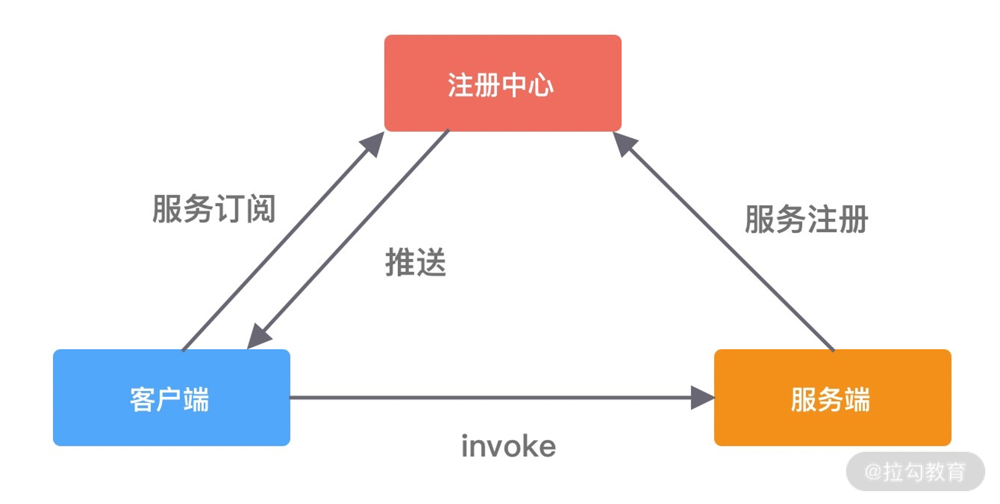
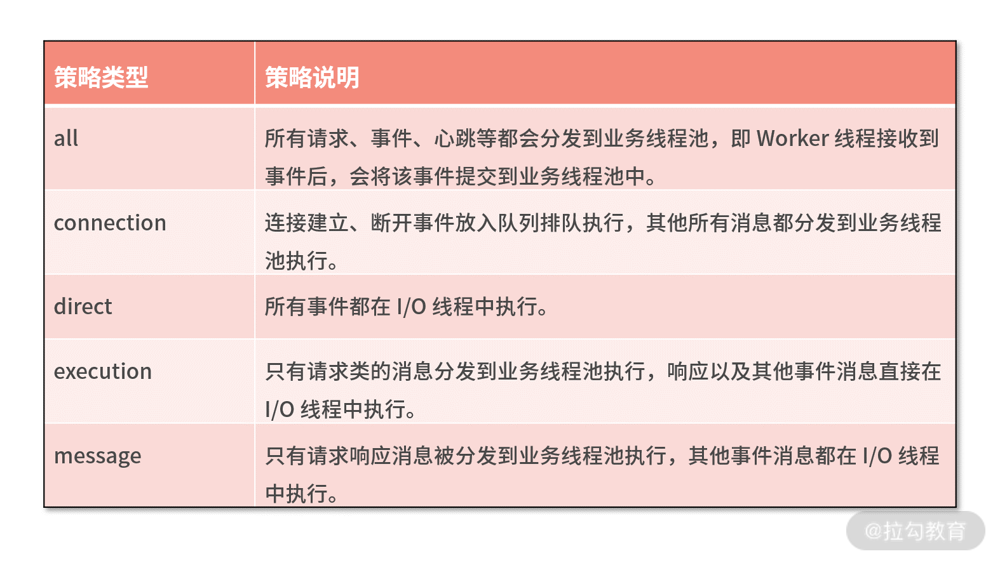

- 00 学好 Netty，是你修炼 Java 内功的必经之路.md.html
- 01 初识 Netty：为什么 Netty 这么流行？.md.html
- 02 纵览全局：把握 Netty 整体架构脉络.md.html
- 03 引导器作用：客户端和服务端启动都要做些什么？.md.html
- 04 事件调度层：为什么 EventLoop 是 Netty 的精髓？.md.html
- 05 服务编排层：Pipeline 如何协调各类 Handler ？.md.html
- 06 粘包拆包问题：如何获取一个完整的网络包？.md.html
- 07 接头暗语：如何利用 Netty 实现自定义协议通信？.md.html
- 08 开箱即用：Netty 支持哪些常用的解码器？.md.html
- 09 数据传输：writeAndFlush 处理流程剖析.md.html
- 10 双刃剑：合理管理 Netty 堆外内存.md.html
- 11 另起炉灶：Netty 数据传输载体 ByteBuf 详解.md.html
- 12 他山之石：高性能内存分配器 jemalloc 基本原理.md.html
- 13 举一反三：Netty 高性能内存管理设计（上）.md.html
- 14 举一反三：Netty 高性能内存管理设计（下）.md.html
- 15 轻量级对象回收站：Recycler 对象池技术解析.md.html
- 16 IO 加速：与众不同的 Netty 零拷贝技术.md.html
- 17 源码篇：从 Linux 出发深入剖析服务端启动流程.md.html
- 18 源码篇：解密 Netty Reactor 线程模型.md.html
- 19 源码篇：一个网络请求在 Netty 中的旅程.md.html
- 20 技巧篇：Netty 的 FastThreadLocal 究竟比 ThreadLocal 快在哪儿？.md.html
- 21 技巧篇：延迟任务处理神器之时间轮 HashedWheelTimer.md.html
- 22 技巧篇：高性能无锁队列 Mpsc Queue.md.html
- 23 架构设计：如何实现一个高性能分布式 RPC 框架.md.html
- 24 服务发布与订阅：搭建生产者和消费者的基础框架.md.html
- 25 远程通信：通信协议设计以及编解码的实现.md.html
- 26 服务治理：服务发现与负载均衡机制的实现.md.html
- 27 动态代理：为用户屏蔽 RPC 调用的底层细节.md.html
- 28 实战总结：RPC 实战总结与进阶延伸.md.html
- 29 编程思想：Netty 中应用了哪些设计模式？.md.html
- 30 实践总结：Netty 在项目开发中的一些最佳实践.md.html
- 31 结束语 技术成长之路：如何打造自己的技术体系.md.html
- 捐赠
23 架构设计：如何实现一个高性能分布式 RPC 框架
在前面的课程中，我们由浅入深地讲解了 Netty 的基础知识和实现原理，并对 Netty 的核心源码进行了剖析，相信你已经体会到了 Netty 的强大之处。本身学习一门技术是一个比较漫长的过程，恭喜你坚持了下来。纸上得来终觉浅，绝知此事要躬行。你是不是已经迫不及待想在项目中使用 Netty 了呢？接下来我会带着你完成一个相对完整的 RPC 框架原型，帮助你加深对 Netty 的理解，希望你能亲自动手跟我一起完成它。
我先来说说，为什么要选择 RPC 框架作为实战项目。RPC 框架是大型企业高频使用的一种中间件框架，用于解决分布式系统中服务之间的调用问题。RPC 框架设计很多重要的知识点，如线程模型、通信协议设计、同步/异步调用、负载均衡等，对于提高我们的技术综合能力有非常大的帮助。
我们实战课需要达到什么样的目标呢？市面上有较多出名的 RPC 框架，例如 Dubbo、Thrift、gRPC 等，RPC 框架本身是非常负责的，我们不可能面面俱到，而是抓住 RPC 框架的核心流程以及必备的组件，开发一个功能比较丰富的小型 RPC 框架。麻雀虽小，五脏俱全。
在正式开始 RPC 实战项目之前，我们先学习一下 RPC 的架构设计，这是项目前期规划非常重要的一步。
RPC 框架架构设计
RPC 又称远程过程调用（Remote Procedure Call），用于解决分布式系统中服务之间的调用问题。通俗地讲，就是开发者能够像调用本地方法一样调用远程的服务。下面我们通过一幅图来说说 RPC 框架的基本架构。

RPC 框架包含三个最重要的组件，分别是客户端、服务端和注册中心。在一次 RPC 调用流程中，这三个组件是这样交互的：
- 服务端在启动后，会将它提供的服务列表发布到注册中心，客户端向注册中心订阅服务地址；
- 客户端会通过本地代理模块 Proxy 调用服务端，Proxy 模块收到负责将方法、参数等数据转化成网络字节流；
- 客户端从服务列表中选取其中一个的服务地址，并将数据通过网络发送给服务端；
- 服务端接收到数据后进行解码，得到请求信息；
- 服务端根据解码后的请求信息调用对应的服务，然后将调用结果返回给客户端。
虽然 RPC 调用流程很容易理解，但是实现一个完整的 RPC 框架设计到很多内容，例如服务注册与发现、通信协议与序列化、负载均衡、动态代理等，下面我们一一进行初步地讲解。
服务注册与发现
在分布式系统中，不同服务之间应该如何通信呢？传统的方式可以通过 HTTP 请求调用、保存服务端的服务列表等，这样做需要开发者主动感知到服务端暴露的信息，系统之间耦合严重。为了更好地将客户端和服务端解耦，以及实现服务优雅上线和下线，于是注册中心就出现了。
在 RPC 框架中，主要是使用注册中心来实现服务注册和发现的功能。服务端节点上线后自行向注册中心注册服务列表，节点下线时需要从注册中心将节点元数据信息移除。客户端向服务端发起调用时，自己负责从注册中心获取服务端的服务列表，然后在通过负载均衡算法选择其中一个服务节点进行调用。以上是最简单直接的服务端和客户端的发布和订阅模式，不需要再借助任何中间服务器，性能损耗也是最小的。
现在思考一个问题，服务在下线时需要从注册中心移除元数据，那么注册中心怎么才能感知到服务下线呢？我们最先想到的方法就是节点主动通知的实现方式，当节点需要下线时，向注册中心发送下线请求，让注册中心移除自己的元数据信息。但是如果节点异常退出，例如断网、进程崩溃等，那么注册中心将会一直残留异常节点的元数据，从而可能造成服务调用出现问题。
为了避免上述问题，实现服务优雅下线比较好的方式是采用主动通知 + 心跳检测的方案。除了主动通知注册中心下线外，还需要增加节点与注册中心的心跳检测功能，这个过程也叫作探活。心跳检测可以由节点或者注册中心负责，例如注册中心可以向服务节点每 60s 发送一次心跳包，如果 3 次心跳包都没有收到请求结果，可以任务该服务节点已经下线。
由此可见，采用注册中心的好处是可以解耦客户端和服务端之间错综复杂的关系，并且能够实现对服务的动态管理。服务配置可以支持动态修改，然后将更新后的配置推送到客户端和服务端，无须重启任何服务。
通信协议与序列化
既然 RPC 是远程调用，必然离不开网络通信协议。客户端在向服务端发起调用之前，需要考虑采用何种方式将调用信息进行编码，并传输到服务端。因为 RPC 框架对性能有非常高的要求，所以通信协议应该越简单越好，这样可以减少编解码的性能损耗。RPC 框架可以基于不同的协议实现，大部分主流 RPC 框架会选择 TCP、HTTP 协议，出名的 gRPC 框架使用的则是 HTTP2。TCP、HTTP、HTTP2 都是稳定可靠的，但其实使用 UDP 协议也是可以的，具体看业务使用的场景。成熟的 RCP 框架能够支持多种协议，例如阿里开源的 Dubbo 框架被很多互联网公司广泛使用，其中可插拔的协议支持是 Dubbo 的一大特色，这样不仅可以给开发者提供多种不同的选择，而且为接入异构系统提供了便利。
客户端和服务端在通信过程中需要传输哪些数据呢？这些数据又该如何编解码呢？如果采用 TCP 协议，你需要将调用的接口、方法、请求参数、调用属性等信息序列化成二进制字节流传递给服务提供方，服务端接收到数据后，再把二进制字节流反序列化得到调用信息，然后利用反射的原理调用对应方法，最后将返回结果、返回码、异常信息等返回给客户端。所谓序列化和反序列化就是将对象转换成二进制流以及将二进制流再转换成对象的过程。因为网络通信依赖于字节流，而且这些请求信息都是不确定的，所以一般会选用通用且高效的序列化算法。比较常用的序列化算法有 FastJson、Kryo、Hessian、Protobuf 等，这些第三方序列化算法都比 Java 原生的序列化操作都更加高效。Dubbo 支持多种序列化算法，并定义了 Serialization 接口规范，所有序列化算法扩展都必须实现该接口，其中默认使用的是 Hessian 序列化算法。
RPC 调用方式
成熟的 RPC 框架一般会提供四种调用方式，分别为同步 Sync、异步 Future、回调 Callback和单向 Oneway。RPC 框架的性能和吞吐量与合理使用调用方式是息息相关的，下面我们逐一介绍下四种调用方式的实现原理。
Sync 同步调用。客户端线程发起 RPC 调用后，当前线程会一直阻塞，直至服务端返回结果或者处理超时异常。Sync 同步调用一般是 RPC 框架默认的调用方式，为了保证系统可用性，客户端设置合理的超时时间是非常重要的。虽说 Sync 是同步调用，但是客户端线程和服务端线程并不是同一个线程，实际在 RPC 框架内部还是异步处理的。Sync 同步调用的过程如下图所示。

- Future 异步调用。客户端发起调用后不会再阻塞等待，而是拿到 RPC 框架返回的 Future 对象，调用结果会被服务端缓存，客户端自行决定后续何时获取返回结果。当客户端主动获取结果时，该过程是阻塞等待的。Future 异步调用过程如下图所示。

- Callback 回调调用。如下图所示，客户端发起调用时，将 Callback 对象传递给 RPC 框架，无须同步等待返回结果，直接返回。当获取到服务端响应结果或者超时异常后，再执行用户注册的 Callback 回调。所以 Callback 接口一般包含 onResponse 和 onException 两个方法，分别对应成功返回和异常返回两种情况。

- Oneway 单向调用。客户端发起请求之后直接返回，忽略返回结果。Oneway 方式是最简单的，具体调用过程如下图所示。

四种调用方式都各有优缺点，很难说异步方式一定会比同步方式效果好，在不用的业务场景可以按需选取更合适的调用方式。
线程模型
线程模型是 RPC 框架需要重点关注的部分，与我们之前介绍的 Netty Reactor 线程模型有什么区别和联系吗？
首先我们需要明确 I/O 线程和业务线程的区别，以 Dubbo 框架为例，Dubbo 使用 Netty 作为底层的网络通信框架，采用了我们熟悉的主从 Reactor 线程模型，其中 Boss 和 Worker 线程池就可以看作 I/O 线程。I/O 线程可以理解为主要负责处理网络数据，例如事件轮询、编解码、数据传输等。如果业务逻辑能够立即完成，也可以使用 I/O 线程进行处理，这样可以省去线程上下文切换的开销。如果业务逻辑耗时较多，例如包含查询数据库、复杂规则计算等耗时逻辑，那么 I/O 必须将这些请求分发到业务线程池中进行处理，以免阻塞 I/O 线程。
那么哪些请求需要在 I/O 线程中执行，哪些又需要在业务线程池中执行呢？Dubbo 框架的做法值得借鉴，它给用户提供了多种选择，它一共提供了 5 种分发策略，如下表格所示。

负载均衡
在分布式系统中，服务提供者和服务消费者都会有多台节点，如何保证服务提供者所有节点的负载均衡呢？客户端在发起调用之前，需要感知有多少服务端节点可用，然后从中选取一个进行调用。客户端需要拿到服务端节点的状态信息，并根据不同的策略实现负载均衡算法。负载均衡策略是影响 RPC 框架吞吐量很重要的一个因素，下面我们介绍几种最常用的负载均衡策略。
- Round-Robin 轮询。Round-Robin 是最简单有效的负载均衡策略，并没有考虑服务端节点的实际负载水平，而是依次轮询服务端节点。
- Weighted Round-Robin 权重轮询。对不同负载水平的服务端节点增加权重系数，这样可以通过权重系数降低性能较差或者配置较低的节点流量。权重系数可以根据服务端负载水平实时进行调整，使集群达到相对均衡的状态。
- Least Connections 最少连接数。客户端根据服务端节点当前的连接数进行负载均衡，客户端会选择连接数最少的一台服务器进行调用。Least Connections 策略只是服务端其中一种维度，我们可以演化出最少请求数、CPU 利用率最低等其他维度的负载均衡方案。
- Consistent Hash 一致性 Hash。目前主流推荐的负载均衡策略，Consistent Hash 是一种特殊的 Hash 算法，在服务端节点扩容或者下线时，尽可能保证客户端请求还是固定分配到同一台服务器节点。Consistent Hash 算法是采用哈希环来实现的，通过 Hash 函数将对象和服务器节点放置在哈希环上，一般来说服务器可以选择 IP + Port 进行 Hash，然后为对象选择对应的服务器节点，在哈希环中顺时针查找距离对象 Hash 值最近的服务器节点。
此外，负载均衡算法可以是多种多样的，客户端可以记录例如健康状态、连接数、内存、CPU、Load 等更加丰富的信息，根据综合因素进行更好地决策。
动态代理
RPC 框架怎么做到像调用本地接口一样调用远端服务呢？这必须依赖动态代理来实现。需要创建一个代理对象，在代理对象中完成数据报文编码，然后发起调用发送数据给服务提供方，以此屏蔽 RPC 框架的调用细节。因为代理类是在运行时生成的，所以代理类的生成速度、生成的字节码大小都会影响 RPC 框架整体的性能和资源消耗，所以需要慎重选择动态代理的实现方案。动态代理比较主流的实现方案有以下几种：JDK 动态代理、Cglib、Javassist、ASM、Byte Buddy，我们简单做一个对比和介绍。
- JDK 动态代理。在运行时可以动态创建代理类，但是 JDK 动态代理的功能比较局限，代理对象必须实现一个接口，否则抛出异常。因为代理类会继承 Proxy 类，然而 Java 是不支持多重继承的，只能通过接口实现多态。JDK 动态代理所生成的代理类是接口的实现类，不能代理接口中不存在的方法。JDK 动态代理是通过反射调用的形式代理类中的方法，比直接调用肯定是性能要慢的。
- Cglib 动态代理。Cglib 是基于 ASM 字节码生成框架实现的，通过字节码技术生成的代理类，所以代理类的类型是不受限制的。而且 Cglib 生成的代理类是继承于被代理类，所以可以提供更加灵活的功能。在代理方法方面，Cglib 是有优势的，它采用了 FastClass 机制，为代理类和被代理类各自创建一个 Class，这个 Class 会为代理类和被代理类的方法分配 index 索引，FastClass 就可以通过 index 直接定位要调用的方法，并直接调用，这是一种空间换时间的优化思路。
- Javassist 和 ASM。二者都是 Java 字节码操作框架，使用起来难度较大，需要开发者对 Class 文件结构以及 JVM 都有所了解，但是它们都比反射的性能要高。Byte Buddy 也是一个字节码生成和操作的类库，Byte Buddy 功能强大，相比于 Javassist 和 ASM，Byte Buddy 提供了更加便捷的 API，用于创建和修改 Java 类，无须理解字节码的格式，而且 Byte Buddy 更加轻量，性能更好。
至此，我们已经对实现 RPC 框架的几个核心要点做了一个大致的介绍，关于通信协议、负载均衡、动态代理在 RPC 框架中如何实现，我们后面会有专门的实践课对其进行详细介绍，本节课我们先有个大概的印象即可。
总结
如果你可以完成上述 RPC 框架的核心功能，那么一个简易的 RPC 框架的 MVP 原型就完成了，这也是我们实践课的目标。当然实现一个高性能高可靠的 RPC 框架并不容易，需要考虑的问题远不止如此，例如异常重试、服务级别线程池隔离、熔断限流、集群容错、优雅下线等等，在实践课最后我会为你讲解 RPC 框架进阶的拓展内容。
© 2019 - 2023 Liangliang Lee. Powered by gin and hexo-theme-book.